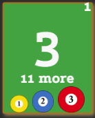

＜
・メイン画面
アプリを立ち上げたときに表示される画面です
ゲーム中に主に使用します
本アプリの簡単な使用方法
1. 画面中央の左右「SL」をタッチして各プレイヤーのスキルを選択
2. 画面上部の「New」をタッチして試合開始
3. バンキング勝者のスコア欄(左右の緑四角)をタッチ
4. 入れたボールをタッチで得点。逆のプレイヤーのスコア欄タッチで交代
5. どちらかが目標点数到達で終了。左プレイヤーのスコア欄右上と右プレイヤーのスコア欄左上が負け点・勝ち点。
各ボタン説明
Undo:操作を１つ戻します
New:ゲーム記録を消して新しくゲームを始めます
T:試合開始からの経過時間です
:通常のルールではオフ(白色)、ダブルルールのときにオン(緑色)にします
History:サマリー画面に移動します
:各プレイヤーの氏名やナンバーなどを入力します
Dead:これまでの無効球の総数です

:フリーボールを得たときにタッチして記録します
Inning:これまでの総イニング数です
:ターン中のプレイヤーのタイムアウトを使用します

:(画像のように)明るい緑のプレイヤーの番です
暗い緑の四角をタッチすると手番を交代します
右上(右プレイヤーは左上)に現在の負け点(勝った場合は勝ち点)が表示されます
真ん中に大きく点数が表示されます
点数の下に勝ちまでの残り点数が表示されます
下に最後に入れたボール３つが表示されます
:このセットの残りタイムアウト使用可能回数です
２つとも暗い場合は、次のセットまで使用不能です
:プレイヤーのスキル(SL)を選択します
→の後ろがゴールの点数です
Safety
:プレイヤーのセーフティの総数です
タッチすると手番のプレイヤーのセーフティをカウントして手番を交代します
BR:マスワリ(ブレイクランアウト)の数です
自動でカウントされます
Ace
:エースの数です
タッチすると手番のプレイヤーのエースをカウントします
:無効球選択モードを切り替えます
文字が赤く、ボールの背景が茶色のときは無効球選択モードです
各ボールをタッチすると無効球としてカウントします
手番を交代すると自動でオフになります
・タイムアウト画面
60秒をカウントダウンします
60秒から更に30秒過ぎると自動でメイン画面に戻ります
＜
:メイン画面に戻ります